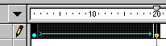
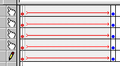
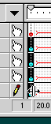
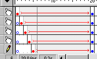
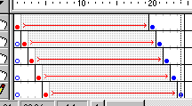

Onion Skin Effect


The onion skin buttons, add a cool effect to your movies. BUT, this is not an effect, it will not be exported along with your movie. Read "Using Onion Skins" for more. This effect, can though be simulated manually. I explain here the fastest and easiest way to do so.
Step 1. Create the symbol you wish to have an "onion skin" effect.
Step 2. Place this symbol in a start and ending keyframe, and motion tween between these.
Step 3. Now comes the cool part: Select the animation you just created in the timeline:

Now press CTRL + ALT + C to copy this selection.
Step 4. Insert several new layers below; as many layers as you want trails.
Step 5. Select all the empty frames in the timeline of one of these layers. Press CTRL + ALT + V to paste the selected piece of timeline you just copied.

Step 6. Ok, now comes the tricky part. Select the first frame, of all the layers in the timeline, EXCEPT the first layer (which will be the symbol that makes the trails:

hold CTRL, and the cursor as that on the image appears. Now click and drag the keyframes one frame to the right. Repeat the with this with the remaining layers, so that your timeline looks something like this:

Step 7. Ok, now we need to ensure that the trails remain even at the end of the animation. Insert blank frames until your timeline looks like this:

Step 7. Basically, we've got the onion skin effect now, but we need to change the transparency of the trails, so that the color also changes. Select the symbol in layer 2 (first trail).
Step 8. Click properties for the symbol that animates in this layer. Change the color effect to 80%. Also do this for the ending keyframe.
Step 7. Repeat this process for the remaining layer, only reducing the transparency. Finally, you should have an effect like this:
This is not 100% like the onion skin's in Flash, but bear in mind, that the onion skin features were only built to extend the usability of Flash. It looks pretty cool considering it's simulated though...